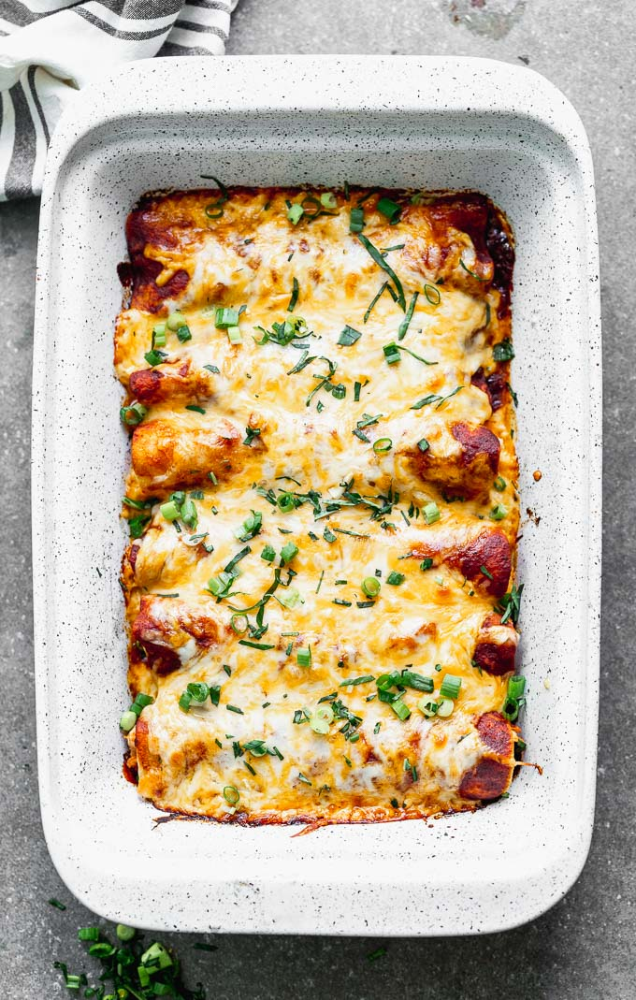

Enchiladas

Tasty Chicken Enchiladas
Enchiladas are very tasty and they aren't difficult to make. These chicken enchiladas are super flavorful with a hint of spice. You will surely be wanting more!
Ingredients
- 1 can condensed cream of chickenf
- 1/2 cup sour cream
- 1 tbsp margarine
- 1 onion, chopped
- 1 tsp chili powder
- 2 cups chopped cooked chicken breast
- 1 can chopped green chile peppers
- 8 flour tortillas
- 1 cup shredded cheddar cheese
Steps
- Preheat oven to 350 degreees
- In a small bowl mix the soup and sour cream; set aside.
- Melt margarine in a medium saucepan over medium high heat. Add onion and chili powder, and saute until tender. Stir in the chicken, chile peppers, and 2 tablespoons of the soup mixture. Cook and stir until heated through.
- Spread 1/2 cup of the soup mixture in a 9x13 inch baking dish. Spoon about 1/4 cup of the chicken mixture down the center of each tortilla. Roll up tortillas, and place, seam-side-down, in the baking dish. Spoon remaining soup mixture on top, and sprinkle with cheese.
- Bake 25 minutes in the preheated oven, or until bubbly and lightly browned.